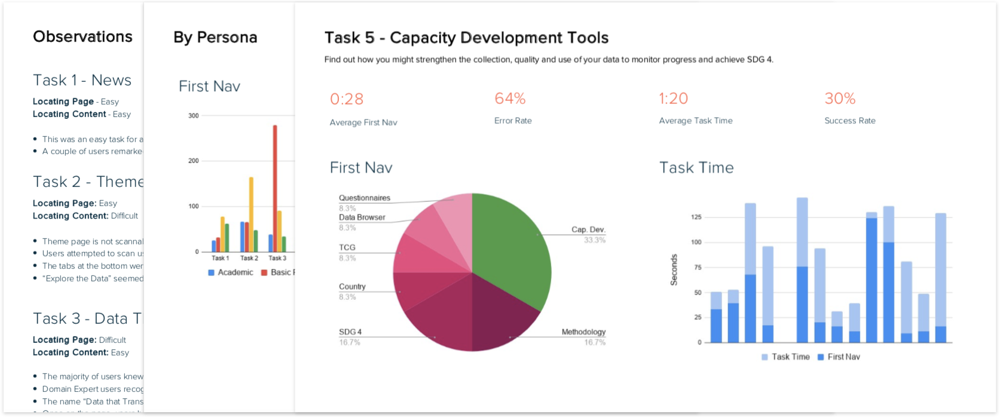

Evaluative Research
Product
A website for a large government data agency to connect the policymakers, advocacy groups and academics with UNESCO data for their Sustainable Development Goals for the purposes of research and advocacy.
Project Goal
They already had a prototype that they wanted to test. It was a new WordPress Theme, with a different layout, streamlined content and added navigation. In addition to the discovery of any general usability problems of the new layout, the navigation and ease of finding things was singled out as a priority.
Potential Approaches
-
A/B Testing
Usability Testing
Tree Testing
If it were just the nav, I would have chosen tree testing but because we were also interested in usability of the pages themselves so I went with usability testing, but integrated some tree testing-esque metrics.
The reason I didn't go with A/B testing was because there were no real "conversions" to be had, and we also wanted qualitative data.
Process
-
Discovery
Test Preparation
Discovery
-
Working with the stakeholders to establish their objectives
Formulating a research plan
Examining the site to be tested and researching how it fits in with other UN sites/departments
Working with stakeholders to consolidate their personas (they were very granular with some overlap) into four groups for testing, decided on recruitment criteria and derived user goals/workflows to be tested.
Test Preparation
-
Recruitment and screening
Developing the scenarios and success criteria based on the output of discovery phase (working collaboratively with the client)
Preparing the script and protocol
Metrics:
-
First Nav Time
First Nav Selection
Task Time
Sucess Rate
Error Rate
Test Moderation
-
I conducted 16 tests, representing four user groups.
Given the global scope of the organization, we needed to do remote testing
I used Zoom for the abiity to see the participant's screen and face, and to record the session
Each test started with a short interview, which got the participant comfortable and talkative while also giving us additional qualitative data and allowing us to understand any idiosyncracies with how they use the site/technology.
Results
-
Generally high successs rate, but a few pages required some domain knowledge and others could have been categorised better or there were multiple places it could've been
Hiding content decluttered the page but made it more difficult to find the hidden elements
General lack of self-evidence and affordances
Some pages needed a more defined hierarchy
The main navigation included links to external sites, which disoriented users
The results were delivered to the client via a report and a presentation
Client was originally planning to run the whole thing using a Wordpress page builder. After the testing, they changed their mind and decided to develop their new website from scratch (RFP pending).
